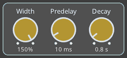

Dragonfly Plate is a free mono-to-stereo reverb plugin based on NVerb and STRev from Freeverb3 VST.

Level of the input signal sent to the output
Level of the reverb signal sent to the output
The output of the Dry and Wet controls are combined to form the reverb’s output signal. Note that sliders are not controlled by the presets. This allows you to set the levels in a way that works for your project, and then explore different presets without the sliders changing.
The Preset Browser section presents a variety of plate and tank presets that set the reverb type and the dials.
The Reverb Type section presents three different plate reverb algorithms:
This thin plate algorithm is a derivative of CCRMA Nrev. It has a sparse tail and some slight early reflections.
This thick plate algorithm is a modification of the Simple Allpass algorithm with a dense tail and no early reflections.
This algorithm is based on the reverb effect described in Jon Dattorro's AES article
Although a preset will automatically select a Reverb Type, another algorithm can be selected after picking a preset to hear how the alternative algorithm sounds with the given dial settings.
The spectrogram has been included to give a better idea of how the various reverb parameters affect the plugin’s output. The spectrogram is rendered by simulating a burst of white noise through the reverb algorithm with the current settings, and then processing the output with a fast fourier transform algorithm.
Clicking on the “?” displays the plugin name, version, license, and credits.
Note that holding the Shift key and clicking a dial will reset the dial to the default for the current preset.
Output stereo width.
Delay before the onset of the reverberation.
A high pass filter applied to the input signal before processing the reverb algorithm.
A low pass filter applied to the input signal before processing the reverb algorithm.
A low pass filter applied to the reverb algorithm's feedback loop.